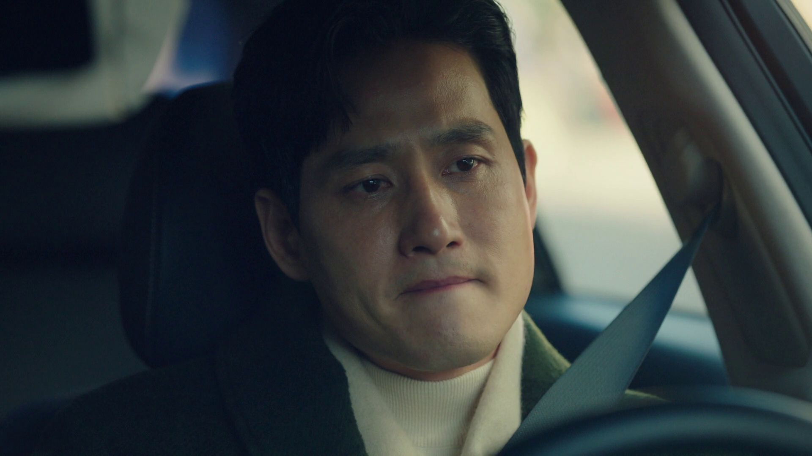
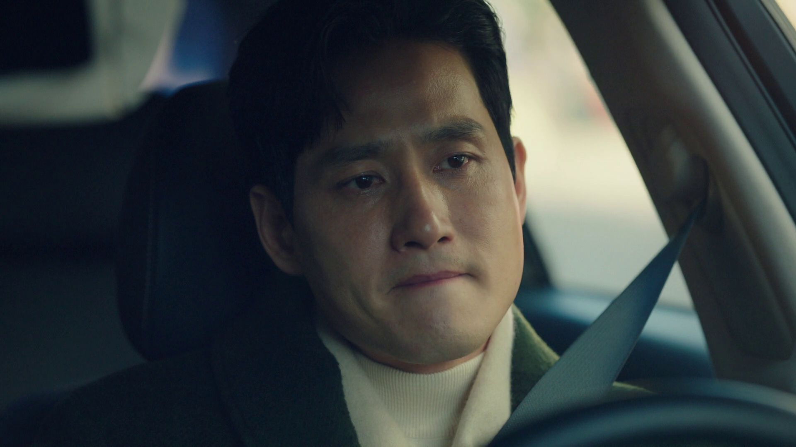

A World of Married Couple (Tagalog Dubbed)
Everything seems perfect in the life of the successful family doctor and associate director, Ji Sun Woo. She lives happily in Gosan with her handsome husband Lee Tae Oh, whom she financially helped establish an entertainment company, and their teenage son, Joon Young. However, the perfect image of a happy, loving family life shatters when she discovers that her husband is having an affair, and even their mutual friends are helping him conceal it. Devastated by the betrayal, she sets on a path of seeking revenge and recollecting her broken self.

 
